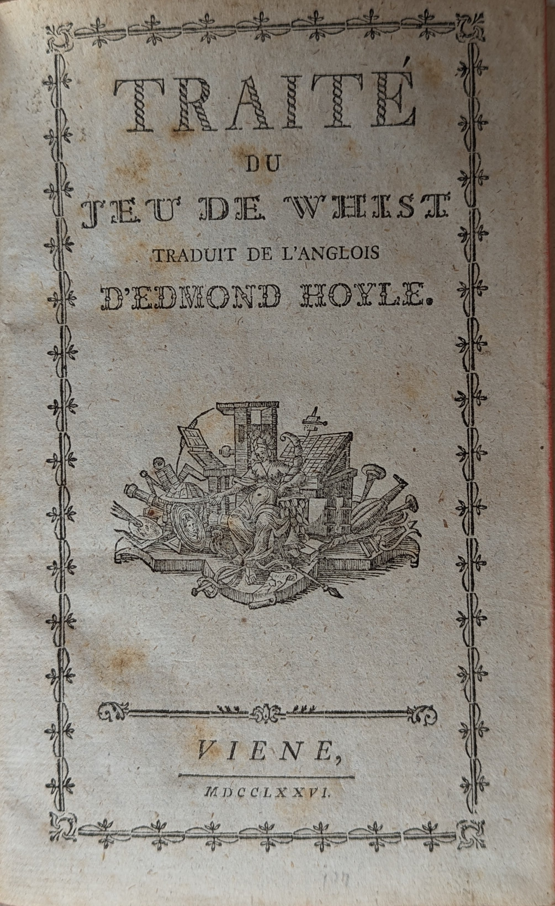

A Descriptive Bibliography of Edmond Hoyle
Copyright © 2014-26 by David Levy
(page updated 2026-03-24)User Guide
np.Whist.Fr.1776
Traité du Jeu de Whisk, first Vienna edition, 1776.
 |
Title: | [within decorative border] TRAITÉ | DU | JEU DU WHIST | Traduit DE L'ANGLOIS | D'EDMOND HOYLE. | [tailpiece] | [decorative rule] | VIENE, | [short rule] | MDCCLXXVI. |
| Collation: | 8o: a–h8 i2 [$1–5 (−h5,i2) signed]; 66 leaves, pp. [1–2] 3–129 [130–132] |
| Contents: | Signature (Page) Reference | Contents | Signature (Page) Reference | Running Titles |
| a1r (1) | title | |||
| a1v (2) | blank | |||
| a2r–a3r (3–5) | ‘[tailpiece] | Ceux qui n'ont aucune idée | du Whiſt [...]’ | a2v–a5r (4–9) | ‘Traité du Jeu | de Whist.’ | |
| a3v–a5v (6–10) | ‘EXPLICATION | De quelque termes, ou mots tech-|niques employés dans ce Traité à | l'uſage des Commençans. | [...]’ | a5v (10) | ‘Traité du Jeu de Whist.’ | |
| a6r–i1r (11–129) | ‘[tailpiece] | TRAITÉ | DU | JEU DE WHIST. | [...]’ | a6v–h8v (12–128) | ‘Traité du Jeu | de Whist.’ | |
| on a8r (15), b1r (17), b2r (19) | ‘du Whist.’ | |||
| i1r (129) | ‘Traité du Jeu de Whist.’ | |||
| i1v–i2v (130–132) | ‘TABLE | DES PRINCIPAUX ARTICLES | DU TRAITÉ | du Jeu De Whist.’ |
| References: | Depaulis 114*, Horr 673, Rather G |
| Copies Seen: | L [7915.a.29]; O [Jessel e.644]; NNPM [E3 092 E 079533]; NvLN [GV1277.H8914 1776]; Levy [1768] |
| Other Copies: | BINs [Os 12895/3]; DE-15 [Kultg.514]; DE-32 [14,4:90(b)]; DE-384 [02/III.6.8.14]; Beauchene; CtY-BR [NLp80 742hh]; LU [GV1277.H894 1776] |